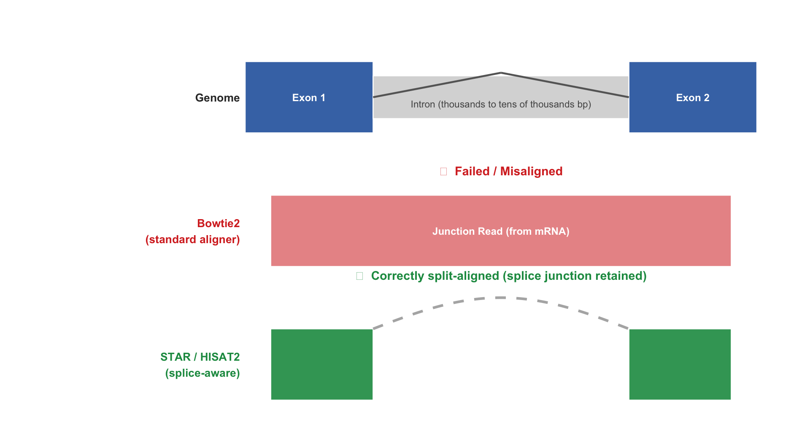
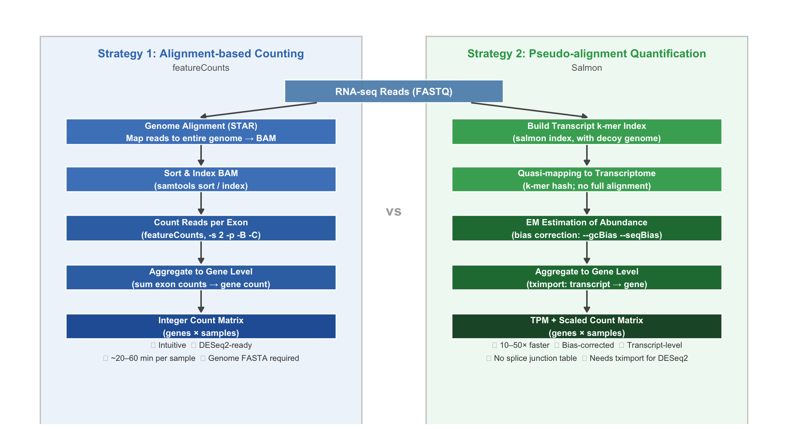

22 Splice-Aware 比对与表达量定量
1 学习目标
完成本专题后，学生应能够：
- 解释 splice-aware 比对的必要性，描述 STAR 两步比对策略的核心逻辑；
- 理解 GTF 注释文件中 gene_id、transcript_id、exon 的层级关系；
- 使用 STAR 完成 RNA-seq 双端比对，正确设置链特异性参数；
- 区分 featureCounts（比对后计数）与 Salmon（伪比对）的方法论差异，并在实际项目中做出合理选择；
- 使用 tximport 将 Salmon 转录本级别定量汇总至基因级别；
- 理解 TPM、FPKM 与原始计数的计算公式与适用场景，解释 DESeq2 必须使用原始计数的原因。
2 为什么 RNA-seq 比对需要特殊处理？
2.1 Read-through 与剪接位点的挑战
在 DNA 测序中，read 是基因组连续区域的测序结果，比对工具只需在基因组上找到一段连续的最优匹配即可。RNA-seq 则面临根本性的不同：成熟 mRNA 经过剪接，内含子已被去除。当一个 150 bp 的 read 跨越剪接位点时，它实际上对应基因组上两段不连续的外显子区域，中间隔着长达数千甚至数万 bp 的内含子。
若使用普通的 DNA 比对工具（如 Bowtie2），跨剪接位点的读段将无法被正确比对，或被强制比对到错误位置，导致：
- Junction read（约占 20–30% 的 reads）丢失，降低定量精度；
- 新型剪接位点无法被发现；
- 外显子边界附近的覆盖度出现人为缺口。

2.2 Splice-Aware 比对的解决思路
普通 DNA 比对工具与 splice-aware 工具在处理跨剪接位点读段时的行为差异，可通过 图 2 直观说明：
图 2 展示了三个层次：基因组结构（外显子-内含子-外显子）、普通比对（Bowtie2） 的失败结果，以及 Splice-Aware 比对（STAR/HISAT2） 的正确分段比对。Junction read 来自 mRNA，其两端分别对应基因组上两个不连续的外显子；普通工具无法在基因组上找到完整的连续匹配而失败，splice-aware 工具则识别出剪接信号，将 read 正确拆分比对并以弧线标记跳过的内含子区间。
Splice-aware 比对工具通过两类策略处理跨剪接位点的 reads：
策略一：外显子图谱索引（HISAT2）：在构建基因组索引时，将已知的剪接位点信息编码进图结构索引，比对时直接在图上搜索最优路径，既能利用先验知识，又支持发现新剪接位点。
策略二：种子-延伸（STAR）：先将 read 的各段子序列分别映射到基因组，识别出可能的剪接位点，再将片段在剪接位点处拼合。
3 STAR 与 HISAT2：两大主流 Splice-Aware 比对工具
STAR 和 HISAT2 是目前 bulk RNA-seq 流程中最常用的两款 splice-aware 比对工具，均能处理跨剪接位点的 reads，但在算法设计、资源消耗与适用场景上存在显著差异。
3.1 核心差异对比
| 维度 | STAR | HISAT2 |
|---|---|---|
| 算法 | 后缀数组（Suffix Array）+ 种子拼接 | 图基因组（Graph Genome）+ BWT-FM 索引 |
| 索引内存 | ~30 GB（人类基因组） | ~4 GB（人类基因组） |
| 比对速度 | 极快（~50M reads/分钟） | 较快（~30M reads/分钟） |
| 剪接位点发现 | 2-pass 模式，新位点发现能力强 | 依赖预建图索引，已知位点准确率高 |
| SNP/单倍型感知 | 不支持 | 支持（grch38_snp_tran 索引） |
| 输出 | BAM + SJ.out.tab（剪接位点表） | BAM（无内建剪接位点表） |
| 主要下游用途 | featureCounts、DESeq2、新转录本发现 | featureCounts、DESeq2、变异感知比对 |
| 推荐场景 | 服务器环境；需发现新剪接位点；大队列分析 | 内存受限环境（≤8 GB）；SNP感知比对 |
如何选择： 若服务器内存充足（≥32 GB），优先选用 STAR，因其 2-pass 模式在新剪接位点检测上具有明显优势，且是 ENCODE 流程的官方标准。若在笔记本或内存受限（<16 GB）的环境下教学演示，HISAT2 是更实用的替代方案——本课程提供了预建的 grch38_snp_tran 索引，可直接使用。
3.2 HISAT2 完整 Workflow
本地已有预建 HISAT2 索引（grch38_snp_tran，含 SNP 和已知转录本信息），可直接跳过索引构建步骤。教学演示使用根目录下的 1M 子集文件；实际分析请改用 data/trimmed/ 下的 trim 后全量文件。
# ── Environment: rnaseq-env (conda activate rnaseq-env) ──────────────────────
BASE="/Users/angdong/Documents/bio_example/bulkRNA"
HISAT2_INDEX="${BASE}/ref/grch38_snp_tran/genome_snp_tran"
GTF="${BASE}/ref/GRCh38.109.gtf"
RESULTS_DIR="${BASE}/results/hisat2"
# PE samples with 1M teaching subsets available at ${BASE}/
PE_SAMPLES="SRR1039508 SRR1039512 SRR1039516"
# === Step 1: Align paired-end reads ===
# --dta : optimise output for featureCounts / StringTie
# --rna-strandness RF : RF-stranded library (TruSeq Stranded mRNA)
# Align stats are captured from stderr to *_align_stats.txt
for SAMPLE in ${PE_SAMPLES}; do
mkdir -p ${RESULTS_DIR}/${SAMPLE}
hisat2 \
-p 8 \
--dta \
--rna-strandness RF \
-x ${HISAT2_INDEX} \
-1 ${BASE}/${SAMPLE}_1_1M.fastq.gz \
-2 ${BASE}/${SAMPLE}_2_1M.fastq.gz \
-S ${RESULTS_DIR}/${SAMPLE}/${SAMPLE}.sam \
2> ${RESULTS_DIR}/${SAMPLE}/${SAMPLE}_align_stats.txt
# === Step 2: SAM → sorted BAM → index (remove intermediate SAM) ===
samtools sort -@ 8 \
-o ${RESULTS_DIR}/${SAMPLE}/${SAMPLE}.sorted.bam \
${RESULTS_DIR}/${SAMPLE}/${SAMPLE}.sam
samtools index ${RESULTS_DIR}/${SAMPLE}/${SAMPLE}.sorted.bam
rm ${RESULTS_DIR}/${SAMPLE}/${SAMPLE}.sam
done
# === Step 3: Count reads with featureCounts ===
featureCounts \
-T 8 \
-a ${GTF} \
-o ${RESULTS_DIR}/hisat2_counts.txt \
-s 2 -p -B -C \
--countReadPairs \
${RESULTS_DIR}/SRR1039508/SRR1039508.sorted.bam \
${RESULTS_DIR}/SRR1039512/SRR1039512.sorted.bam \
${RESULTS_DIR}/SRR1039516/SRR1039516.sorted.bam查看 HISAT2 比对统计： 上方命令已将 stderr 重定向至 *_align_stats.txt，格式示例如下：
cat ${BASE}/results/hisat2/SRR1039508/SRR1039508_align_stats.txt
# 2000000 reads; of these:
# 2000000 (100.00%) were paired; of these:
# 98541 (4.93%) aligned concordantly 0 times
# 1774631 (88.73%) aligned concordantly exactly 1 time
# 126828 (6.34%) aligned concordantly >1 times
# 94.73% overall alignment rate生产环境（全量数据）只需将输入替换为 trim 后文件：
-1 ${BASE}/data/trimmed/${SAMPLE}_1.fastq.gz \
-2 ${BASE}/data/trimmed/${SAMPLE}_2.fastq.gz \4 STAR：RNA-seq 比对的工业标准
STAR（Spliced Transcripts Alignment to a Reference）是目前使用最广泛的 RNA-seq 比对工具，兼顾速度（基于 RAM 的高速索引）与准确性（支持 2-pass 模式发现新剪接位点）。
4.1 STAR 比对算法原理
STAR 的比对分为两个核心阶段：
第一阶段：种子查找（Maximal Mappable Prefix, MMP）
STAR 从 read 的每个位置出发，在基因组索引中寻找能精确匹配的最长前缀序列（MMP）。这一步利用了后缀数组（Suffix Array）索引实现高速查找。对于一个跨越剪接位点的 read，MMP 会在第一个外显子末端停止延伸，产生一个”未映射尾部”。
第二阶段：拼接与比对评分
对每个 MMP 片段，STAR 在其末端的基因组区域内搜索可能的剪接信号（GT-AG 规则，GT…AG 是内含子两端的保守序列），将未映射的尾部延伸至下一个外显子起始位置，验证拼合后的比对得分。得分最高的比对方案即为最终结果。
两遍比对（2-pass mode）： STAR 的第一遍比对（1-pass）利用注释中的已知剪接位点；在第一遍完成后，将发现的所有新剪接位点加入索引，再进行第二遍比对（2-pass）。这显著提高了低表达基因的新剪接位点检出率，推荐在正式分析中开启（--twopassMode Basic）。
4.2 GTF 注释文件的作用
GTF（General Transfer Format）文件描述基因组注释，是 STAR 索引构建和 featureCounts 计数的必要输入。理解其层级结构有助于正确设置工具参数。
# GTF 文件结构示例（第9列含关键属性）
# chr source feature start end . strand . attributes
chr1 ENSEMBL gene 65419 71585 . + . gene_id "ENSG00000186092"; gene_name "OR4F5";
chr1 ENSEMBL transcript 65419 71585 . + . gene_id "ENSG00000186092"; transcript_id "ENST00000641515";
chr1 ENSEMBL exon 65419 65433 . + . gene_id "ENSG00000186092"; transcript_id "ENST00000641515";
chr1 ENSEMBL exon 65520 65573 . + . gene_id "ENSG00000186092"; transcript_id "ENST00000641515";关键层级：gene → transcript → exon。featureCounts 在 exon 级别计数，通过 gene_id 属性将结果汇总至基因层面。
4.3 STAR 索引构建与比对
基因组 FASTA 文件已存在于本地，可直接进行索引构建，无需下载。
# ── Environment: star-env (conda activate star-env) ──────────────────────────
BASE="/Users/angdong/Documents/bio_example/bulkRNA"
GENOME_DIR="${BASE}/ref"
STAR_INDEX="${GENOME_DIR}/star_index" # dir exists; index not yet built
# === Step 1: Build STAR genome index ===
# Requires ~30 GB RAM; --sjdbOverhang = read length - 1 (150 bp reads → 149)
# genome FASTA already at: ${GENOME_DIR}/Homo_sapiens.GRCh38.dna.primary_assembly.fa
STAR \
--runMode genomeGenerate \
--genomeDir ${STAR_INDEX} \
--genomeFastaFiles ${GENOME_DIR}/Homo_sapiens.GRCh38.dna.primary_assembly.fa \
--sjdbGTFfile ${GENOME_DIR}/GRCh38.109.gtf \
--sjdbOverhang 149 \
--runThreadN 8
# === Step 2: Align all PE samples (with 2-pass mode) ===
# Teaching demo uses 1M-read subsets at ${BASE}/
# For production: replace with ${BASE}/data/trimmed/${SAMPLE}_[12].fastq.gz
RESULTS_DIR="${BASE}/results/star"
PE_SAMPLES="SRR1039508 SRR1039512 SRR1039516"
for SAMPLE in ${PE_SAMPLES}; do
mkdir -p ${RESULTS_DIR}/${SAMPLE}
STAR \
--runThreadN 8 \
--genomeDir ${STAR_INDEX} \
--readFilesIn \
${BASE}/${SAMPLE}_1_1M.fastq.gz \
${BASE}/${SAMPLE}_2_1M.fastq.gz \
--readFilesCommand zcat \
--outSAMtype BAM SortedByCoordinate \
--outSAMattributes NH HI AS NM MD \
--outFileNamePrefix ${RESULTS_DIR}/${SAMPLE}/ \
--outFilterType BySJout \
--alignSJoverhangMin 8 \
--alignSJDBoverhangMin 1 \
--outFilterMismatchNmax 999 \
--outFilterMismatchNoverReadLmax 0.04 \
--alignIntronMin 20 \
--alignIntronMax 1000000 \
--alignMatesGapMax 1000000 \
--twopassMode Basic
samtools index ${RESULTS_DIR}/${SAMPLE}/Aligned.sortedByCoord.out.bam
done
# Key STAR output files per sample:
# Aligned.sortedByCoord.out.bam -- sorted, indexed BAM
# Log.final.out -- alignment summary statistics
# SJ.out.tab -- discovered splice junction tableSTAR Log.final.out 关键指标解读：
# Good alignment results (expected ranges):
Uniquely mapped reads % | 80-95% (< 75% may indicate quality issues)
% of reads mapped to multiple loci | 5-15% (high in repetitive regions)
% of reads unmapped: too short | < 5% (high suggests over-trimming)5 表达量定量：两种主流策略
图 3 对比了两种策略的核心流程差异：比对后计数（Alignment-based counting）先将 reads 全基因组比对再逐外显子计数，伪比对定量（Pseudo-alignment）跳过全基因组比对、直接通过 k-mer 索引将 reads 映射到转录本并估计丰度。

5.1 策略一：比对后计数（featureCounts）
featureCounts 是 Subread 工具包的组成部分，逐个统计每个基因的外显子区域内的比对 reads 数量。其优点是流程直观、结果可解释性强；缺点是对多比对 reads 的处理较为简单，且不估计转录本层面的不确定性。
# featureCounts: count reads per gene (using exon features)
# -s 2 = RF-stranded (TruSeq Stranded mRNA)
# -p = paired-end mode
# -B = both mates must be mapped
# -C = exclude chimeric reads
featureCounts \
-T 16 \
-a Homo_sapiens.GRCh38.109.gtf \
-o results/featureCounts/pasilla_counts.txt \
-s 2 \
-p -B -C \
--countReadPairs \
results/star/SRR1039508/Aligned.sortedByCoord.out.bam \
results/star/SRR1039512/Aligned.sortedByCoord.out.bam \
results/star/SRR1039516/Aligned.sortedByCoord.out.bam
# featureCounts output: tab-delimited matrix
# Rows = genes (Ensembl ID), Columns = samples
# First 6 columns: GeneID, Chr, Start, End, Strand, Length重叠歧义处理：当一个 read 跨越两个基因的外显子时，featureCounts 默认丢弃该 read（--fracOverlap 0）。对于重叠基因密集的区域，可使用 --fraction 参数将 read 计数按重叠比例分配，但这会产生非整数计数，不适用于 DESeq2。
5.2 策略二：伪比对定量（Salmon）
Salmon 采用了完全不同的范式：不进行全基因组比对，而是将 reads 与转录本序列进行快速匹配（quasi-mapping），利用 k-mer 哈希索引定位读段到最可能的转录本。这种方式在速度上快 10–50 倍，同时内置了多种偏差校正模型。
黄金法则： Salmon 内置的 GC 偏差校正（--gcBias）和序列偏差校正（--seqBias）在大多数真实 RNA-seq 数据上能提高定量精度，特别是对 GC 含量极端的基因。建议默认开启两者。
# === Step 1: Build Salmon index from transcript sequences ===
# Extract transcript sequences from genome + GTF using gffread
gffread Homo_sapiens.GRCh38.109.gtf \
-g Homo_sapiens.GRCh38.dna.primary_assembly.fa \
-w transcripts.fa
# Build Salmon index (with decoy-aware indexing for higher accuracy)
# The decoy file is the genome itself (for selective alignment)
grep "^>" Homo_sapiens.GRCh38.dna.primary_assembly.fa | \
cut -d " " -f 1 | sed 's/>//' > decoys.txt
cat transcripts.fa Homo_sapiens.GRCh38.dna.primary_assembly.fa > gentrome.fa
salmon index \
--transcripts gentrome.fa \
--decoys decoys.txt \
--index index/salmon_GRCh38 \
--gencode \
--threads 16
# === Step 2: Quantify each sample ===
# --libType A = auto-detect library type
# --gcBias = correct for GC content bias
# --seqBias = correct for sequence-specific bias
# --validateMappings = use selective alignment (recommended)
salmon quant \
--index index/salmon_GRCh38 \
--libType A \
--mates1 data/trimmed/SRR1039508_1.fastq.gz \
--mates2 data/trimmed/SRR1039508_2.fastq.gz \
--output results/salmon/SRR1039508 \
--gcBias \
--seqBias \
--validateMappings \
--threads 16
# Output: results/salmon/SRR1039508/quant.sf
# Columns: Name (transcript ID), Length, EffectiveLength, TPM, NumReads理解选择性比对（Selective Alignment）：常规 Salmon 的 quasi-mapping 速度极快，但可能将来自类似序列的 reads 错误分配。Selective Alignment（--validateMappings）引入了一个额外验证步骤：对候选转录本执行完整的序列比对打分，显著减少了假阳性映射，在准确性上接近 STAR 全基因组比对，而速度仍比 STAR 快 3–5 倍。
5.3 使用 tximport 汇总 Salmon 结果
Salmon 在转录本层面进行定量，而下游分析（DESeq2）通常在基因层面进行。tximport 包负责将转录本级别的 TPM 和 counts 汇总至基因层面，同时传递 Salmon 的不确定性估计（Bootstrap 分位数），为 DESeq2 提供更可靠的输入。
library(tximport)
library(DESeq2)
# Create transcript-to-gene mapping table
# Using biomaRt or pre-downloaded tx2gene file
library(biomaRt)
mart <- useMart("ensembl", dataset = "hsapiens_gene_ensembl")
tx2gene <- getBM(
attributes = c("ensembl_transcript_id_version", "ensembl_gene_id"),
mart = mart
)
# Save for reuse
write.csv(tx2gene, "tx2gene_GRCh38.csv", row.names = FALSE)
# Define sample paths
sample_ids <- c("SRR1039508", "SRR1039512", "SRR1039516",
"SRR1039509", "SRR1039513", "SRR1039517")
files <- file.path("results/salmon", sample_ids, "quant.sf")
names(files) <- sample_ids
# Import and summarize to gene level
txi <- tximport(
files,
type = "salmon",
tx2gene = tx2gene,
ignoreTxVersion = TRUE # strip version numbers from transcript IDs
)
# txi is a list with: counts, abundance (TPM), length, countsFromAbundance
# Use txi$counts for DESeq2 input (scaled to gene-level counts)
dim(txi$counts) # genes x samples matrix6 定量单位的选择：TPM、FPKM 与原始计数
6.1 各单位的计算公式
三种常见定量单位针对不同的偏差进行校正：
FPKM（Fragments Per Kilobase of transcript per Million mapped reads）： \[\text{FPKM}_i = \frac{C_i}{L_i / 10^3 \times N / 10^6} = \frac{C_i \times 10^9}{L_i \times N}\]
其中 \(C_i\) 是基因 \(i\) 的 read 数，\(L_i\) 是基因有效长度（bp），\(N\) 是样本的总 mapped reads 数。同时校正基因长度和测序深度。
TPM（Transcripts Per Million）： \[\text{TPM}_i = \frac{C_i / L_i}{\sum_j (C_j / L_j)} \times 10^6\]
先对每个基因做长度校正，再将所有基因的 TPM 归一化使总和为 10^6。TPM 的关键优势：同一样本中所有基因的 TPM 之和恒为 10^6，使不同样本间同一基因的 TPM 可以直接比较（FPKM 无此性质）。
原始计数（Raw Counts）：featureCounts 或 tximport 输出的未经归一化整数计数，仅校正了测序深度差异（由 DESeq2 的 Size Factor 在分析过程中处理）。
6.2 为什么 DESeq2 必须使用原始计数？
DESeq2 的负二项分布统计模型要求输入未归一化的整数计数，原因如下：
- 模型假设：负二项分布模拟的是测序过程中随机抽样的计数数据；TPM/FPKM 是连续值且不服从此分布；
- 内部归一化：DESeq2 通过 Size Factor 在模型内部处理测序深度差异，外部归一化会破坏模型的统计假设；
- 方差估计：DESeq2 的过离散度（Overdispersion）估计依赖于计数数据的整数性质。
严重错误提示： 将 TPM 或 FPKM 值输入 DESeq2 是一个严重的统计错误，会导致假阳性率失控。正确的做法是：DESeq2 和 edgeR 使用原始计数；跨样本可视化和基因水平比较使用 TPM；FPKM 已基本被 TPM 取代，不推荐使用。
7 两种定量策略的比较
| 特性 | featureCounts | Salmon |
|---|---|---|
| 比对方式 | 基于全基因组 BAM 比对 | 伪比对/选择性比对 |
| 速度 | 较慢（依赖 STAR 输出） | 极快（直接从 FASTQ） |
| 偏差校正 | 无 | GC bias、序列偏差 |
| 多比对处理 | 默认丢弃；-M --fraction 分数分配 |
EM 算法优化分配 |
| 不确定性估计 | 无 | Bootstrap 区间 |
| 输出层级 | 基因级别 | 转录本级别（需 tximport） |
| DESeq2 兼容性 | 直接兼容 | 需通过 tximport |
| 推荐场景 | 快速分析、已有 BAM 文件 | 新项目、需要偏差校正 |
7.1 多比对 reads 的处理策略
当一条 read 能比对到基因组多个位置时，称为多比对 read（multimapper）。多比对现象在上表中是两种策略最核心的行为差异之一，理解其来源和处理逻辑有助于正确解读定量结果。
多比对的主要来源：
- 重复元件：LINE、SINE、转座子家族中高度相似的拷贝；
- 同源基因家族：如组蛋白基因簇、嗅觉受体基因家族；
- 假基因：与功能基因高度相似但无功能的序列拷贝。
不同工具的处理策略及适用场景：
| 工具与参数 | 策略 | 适用场景 |
|---|---|---|
| STAR（默认输出） | 保留所有比对位置，NH:i:N 标记总数 |
保留原始信息，由下游工具决策 |
| featureCounts（默认） | 丢弃全部多比对 reads | 保守计数；DESeq2 首选 |
featureCounts -M --fraction |
按位置数均等分配（产生小数计数） | 估计总体趋势；不适用于 DESeq2 |
| Salmon | EM 算法迭代优化，按转录本丰度加权分配 | 转录本级别定量的最优策略 |
--fraction 产生的小数计数不可用于 DESeq2： DESeq2 的负二项分布模型要求严格整数输入。若使用 -M --fraction，须在导入前先取整（round()），但这会引入额外误差，不推荐用于差异表达分析。
# 查看 STAR 输出的多比对率
BASE="/Users/angdong/Documents/bio_example/bulkRNA"
grep "% of reads mapped to multiple loci" \
${BASE}/results/star/SRR1039508/Log.final.out
# 统计唯一比对 vs 全部比对 reads（STAR 中 MAPQ=255 表示唯一比对）
samtools view -c -q 255 \
${BASE}/results/hisat2/SRR1039508/SRR1039508.sorted.bam # uniquely mapped
samtools view -c -F 4 \
${BASE}/results/hisat2/SRR1039508/SRR1039508.sorted.bam # all mapped8 实践：完整比对与定量流程
以下脚本将前述各步骤串联为完整流程，以本地教学数据集中三个配对末端样本（1M 子集）为例。
# ── Environment: star-env for alignment; rnaseq-env for featureCounts ────────
BASE="/Users/angdong/Documents/bio_example/bulkRNA"
STAR_INDEX="${BASE}/ref/star_index"
GTF="${BASE}/ref/GRCh38.109.gtf"
STAR_OUT="${BASE}/results/star"
FC_OUT="${BASE}/results/featureCounts"
PE_SAMPLES="SRR1039508 SRR1039512 SRR1039516"
mkdir -p ${FC_OUT}
# === Step 1: STAR alignment (conda activate star-env) ===
for SAMPLE in ${PE_SAMPLES}; do
mkdir -p ${STAR_OUT}/${SAMPLE}
STAR \
--runThreadN 8 \
--genomeDir ${STAR_INDEX} \
--readFilesIn \
${BASE}/${SAMPLE}_1_1M.fastq.gz \
${BASE}/${SAMPLE}_2_1M.fastq.gz \
--readFilesCommand zcat \
--outSAMtype BAM SortedByCoordinate \
--outSAMattributes NH HI AS NM MD \
--outFileNamePrefix ${STAR_OUT}/${SAMPLE}/ \
--outFilterType BySJout \
--alignSJoverhangMin 8 \
--alignSJDBoverhangMin 1 \
--outFilterMismatchNmax 999 \
--outFilterMismatchNoverReadLmax 0.04 \
--alignIntronMin 20 \
--alignIntronMax 1000000 \
--alignMatesGapMax 1000000 \
--twopassMode Basic
samtools index ${STAR_OUT}/${SAMPLE}/Aligned.sortedByCoord.out.bam
done
# === Step 2: featureCounts on all BAM files (conda activate rnaseq-env) ===
featureCounts \
-T 8 \
-a ${GTF} \
-o ${FC_OUT}/pasilla_counts.txt \
-s 2 -p -B -C --countReadPairs \
${STAR_OUT}/SRR1039508/Aligned.sortedByCoord.out.bam \
${STAR_OUT}/SRR1039512/Aligned.sortedByCoord.out.bam \
${STAR_OUT}/SRR1039516/Aligned.sortedByCoord.out.bam# === R: Compare featureCounts vs Salmon quantification ===
library(tximport)
library(readr)
library(ggplot2)
# Load featureCounts output
fc_data <- read.table(
"results/featureCounts/pasilla_counts.txt",
header = TRUE, skip = 1, row.names = 1
)
fc_counts <- fc_data[, 7:ncol(fc_data)]
colnames(fc_counts) <- c("SRR1039508", "SRR1039512", "SRR1039516")
# Load Salmon via tximport
tx2gene <- read.csv("tx2gene_GRCh38.csv")
files <- file.path("results/salmon",
c("SRR1039508", "SRR1039512", "SRR1039516"),
"quant.sf")
names(files) <- c("SRR1039508", "SRR1039512", "SRR1039516")
txi <- tximport(files, type = "salmon",
tx2gene = tx2gene, ignoreTxVersion = TRUE)
# Align gene IDs and compute correlation
common_genes <- intersect(rownames(fc_counts), rownames(txi$counts))
fc_s1 <- fc_counts[common_genes, "SRR1039508"]
salmon_s1 <- txi$counts[common_genes, "SRR1039508"]
cor_val <- cor(log1p(fc_s1), log1p(salmon_s1))
# Scatter plot comparison
df_compare <- data.frame(
featureCounts = log1p(fc_s1),
Salmon = log1p(salmon_s1)
)
ggplot(df_compare, aes(x = featureCounts, y = Salmon)) +
geom_point(alpha = 0.2, size = 0.5, color = "steelblue") +
geom_abline(slope = 1, intercept = 0,
color = "firebrick", linetype = "dashed") +
annotate("text", x = 2, y = 12,
label = sprintf("Pearson r = %.4f", cor_val),
size = 4) +
labs(
x = "log1p(featureCounts)",
y = "log1p(Salmon)",
title = "featureCounts vs Salmon: SRR1039508",
subtitle = "Each point = one gene; diagonal = perfect agreement"
) +
theme_classic()9 SAM/BAM 格式解析
理解比对输出文件的格式，是排查比对问题和下游分析的基础。STAR 和 HISAT2 均输出 SAM（Sequence Alignment/Map）格式或其二进制压缩版 BAM。
9.1 SAM 文件结构
SAM 文件由两部分组成：以 @ 开头的头部（Header）行，以及每条 read 的比对记录行（11 个强制字段 + 可选标签）。
# View BAM file header
samtools view -H sample.bam | head -20
# View first 5 alignment records
samtools view sample.bam | head -5
# Example alignment record:
# QNAME FLAG RNAME POS MAPQ CIGAR RNEXT PNEXT TLEN SEQ QUAL
# SRR...1 99 chr1 65419 255 90M60N60M = 65560 201 ACGT.. IIII..关键字段解读：
FLAG（比对标志位）：16 位整数，每位代表一个属性。常用位：
| 值 | 含义 |
|---|---|
| 1 (0x1) | 双端测序读段 |
| 4 (0x4) | 该 read 未比对 |
| 16 (0x10) | 比对在反链 |
| 64 (0x40) | Read 1 |
| 128 (0x80) | Read 2 |
一条 FLAG = 99 的 read 含义：99 = 64+32+2+1，即双端读段（1）、配对正确（2）、配对 read 在反链（32）、本 read 是 Read 1（64）。
CIGAR 字符串：描述 read 如何与参考序列对齐：
| 符号 | 含义 |
|---|---|
| M | 匹配（含错配） |
| N | 跳跃（对应内含子） |
| S | 软截断（read 末端未比对，序列保留） |
| I | 插入 |
| D | 缺失 |
例如 90M2000N60M 表示：read 前 90 bp 比对到外显子，跳过 2000 bp 内含子，后 60 bp 比对到下一个外显子——这是一条典型的 junction read。
# Useful samtools commands for QC
# Check alignment statistics
samtools flagstat sample.bam
# Check per-chromosome mapping rates
samtools idxstats sample.bam
# View only uniquely mapped reads (MAPQ >= 255 for STAR)
samtools view -q 255 sample.bam | head -5
# Check insert size distribution (for paired-end data)
samtools stats sample.bam | grep "^IS" | \
awk '{print $2, $3}' > insert_sizes.txt10 定量结果的质量诊断
在完成比对和定量后，应对结果矩阵进行基本诊断，发现异常样本或基因。
library(DESeq2)
library(ggplot2)
# Load count matrix from featureCounts
counts_raw <- read.table(
"results/featureCounts/pasilla_counts.txt",
header = TRUE, skip = 1, row.names = 1
)
counts <- counts_raw[, 7:ncol(counts_raw)]
colnames(counts) <- c("untreated1", "untreated2", "treated1")
# === Diagnostic 1: Library size distribution ===
lib_sizes <- colSums(counts)
barplot(lib_sizes / 1e6,
main = "Library sizes (millions of mapped reads)",
ylab = "Mapped reads (M)",
col = "steelblue")
abline(h = mean(lib_sizes) / 1e6, col = "firebrick",
lty = 2, lwd = 2)
# Rule of thumb: samples with < 5M reads may have low power;
# samples with 2-fold difference in library size require careful normalization
# === Diagnostic 2: Genes detected per sample ===
genes_detected <- colSums(counts > 0)
cat("Genes detected per sample:\n")
print(genes_detected)
# Expected: 12,000 - 18,000 for human poly-A enriched library
# === Diagnostic 3: Top expressed genes ===
top_genes <- head(sort(rowMeans(counts), decreasing = TRUE), 20)
cat("\nTop 20 most expressed genes (mean counts):\n")
print(top_genes)
# Warning: if top genes are rRNA/mitochondrial, library QC failed
# === Diagnostic 4: Expression density plot ===
log_counts <- log1p(as.matrix(counts))
plot(density(log_counts[, 1]),
main = "Expression density (log1p counts)",
xlab = "log1p(count)", col = "steelblue", lwd = 2)
for (i in 2:ncol(log_counts)) {
lines(density(log_counts[, i]),
col = c("darkorange", "firebrick")[i - 1], lwd = 2)
}
legend("topright", colnames(counts),
col = c("steelblue", "darkorange", "firebrick"), lwd = 2)
# All samples should have similar distribution shape11 课后自测 (Post-Lesson Quiz)
一个 150 bp 的 RNA-seq read 跨越了一个约 5,000 bp 的内含子：read 的前 90 bp 来自外显子 3，后 60 bp 来自外显子 4。若使用 Bowtie2（非 splice-aware）比对，这条 read 可能会发生什么？使用 STAR 后结果有何不同？
STAR 的两遍比对（2-pass mode）与一遍比对相比，主要在哪类 reads 的处理上有优势？其背后的原理是什么？
featureCounts 的
-s参数有三个选项（0、1、2）。若对一个 RF-stranded 文库（TruSeq Stranded）使用了-s 0（非链特异性），会对计数结果产生什么影响？下列哪种情况适合使用 FPKM/TPM，哪种情况必须使用原始计数？
- （a）在论文图表中比较同一样本内不同基因的表达水平；
- （b）使用 DESeq2 进行差异表达分析；
- （c）比较不同物种中同一基因家族的相对表达。
Salmon 的
--gcBias校正对哪类基因的定量影响最大？请说明原因。
参考答案 (Reference Answers)
使用 Bowtie2，该 read 无法被连续比对（中间隔着 5,000 bp 内含子），可能被标记为未比对（unmapped）、或被强制映射到基因组上错误的连续区域（如假基因）。使用 STAR，MMP 算法会在外显子 3 末端识别 GT 剪接信号，将前 90 bp 映射至外显子 3，后 60 bp 映射至外显子 4，正确识别这条 junction read 并计入两个外显子的交界处。
2-pass 模式主要对低表达基因的新型剪接位点（novel splice junctions）有显著优势。第一遍比对发现的新剪接位点被加入临时索引，第二遍比对时这些新位点能辅助低表达 junction reads 的正确定位——这些 reads 在第一遍中因缺乏索引支持而无法被精确比对，在第二遍中则能利用高表达样本发现的剪接位点信息正确映射。
使用
-s 0（非链特异性），featureCounts 会同时计算正链和反链上的 reads。对于位于正反链都有基因的重叠区域，会引入反义链 reads 的噪声，导致计数虚高；对于无重叠的单基因区域，影响较小。整体效果是增加了假阳性信号，降低了链特异性差异的检测能力。（a）可视化同一样本内不同基因相对水平 → 使用 TPM（已做长度与深度双校正，同样本内可比）；（b）DESeq2 差异表达 → 必须使用原始计数（整数，满足负二项模型假设）；（c）跨物种比较 → 使用 TPM（深度和长度已校正），但需注意基因长度在不同物种间可能不同，应谨慎解读。
GC 偏差校正对 GC 含量极端的基因影响最大——即 GC 含量极高（> 70%）或极低（< 30%）的基因。这些基因在 PCR 扩增过程中效率不同（GC 富集区域扩增效率低），导致它们的 reads 数量系统性偏低或偏高。Salmon 的 GC bias 校正通过对每个基因按其 GC 含量估计一个校正因子，补偿这一系统性偏差。